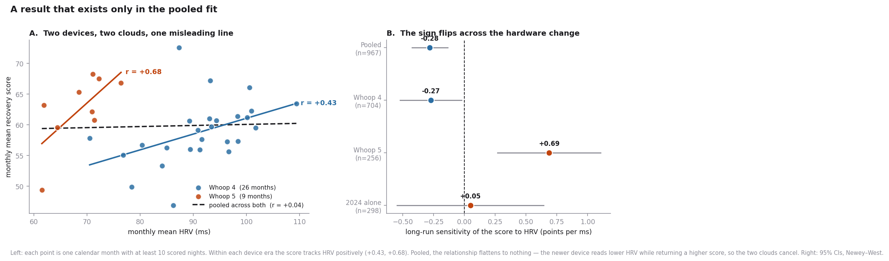
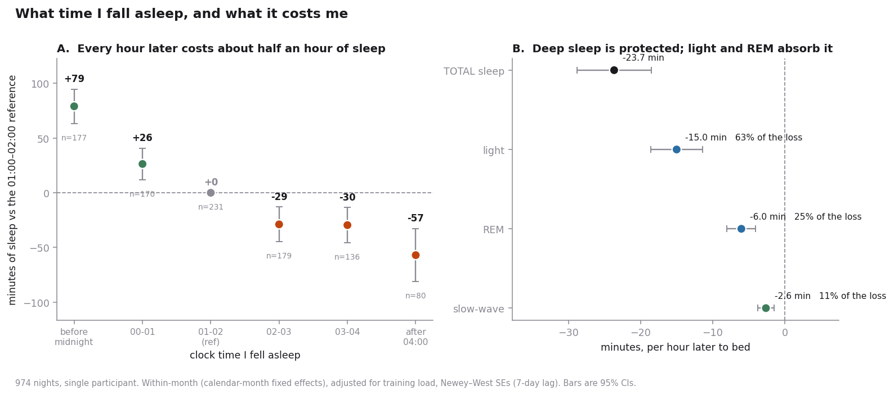

I Optimised Everything for Three Years. But all I had to fix was Bedtime.
I view the human body as the most complex engineered system we know, and for three years I treated my own like one. I wore a Whoop every night from August 2023 to August 2026 and ran an ongoing, badly-controlled experiment on myself.
I stopped stimulants. I added supplements and melatonin, the usual list. I rebuilt my gym routine more than once. I worked on sleep hygiene: no screens in bed, ear plugs, morning light, meditation. Every one of those the Whoop app asks you about each morning, and I answered honestly for a thousand mornings.
Then I exported the whole record : 1009 cycles (whoop daily records), 1110 sleeps, 1038 workouts, 12,206 journal answers and asked the obvious question. Which of these actually did anything?
The answer took a detour through a result that turned out to be an illusion, and then landed somewhere I was not expecting and had never measured.
The detour
The first thing I noticed was not about my habits at all.
Over three years my HRV (Heart rate variability) fell by 8.3 ms (milliseconds) per year, from 97 ms to 65 ms by quarter. A third of it, gone. My recovery score (The Whoop metric that measures “freshness/readiness”) over the same period went up by 1.7 points a year.
That is not a rounding error. HRV is the biggest single input to that score. One number said I had lost a third of my stress-regulation capacity (lower HRV); the other said I was very slightly better than before (higher recovery).
Then the comparison that made me sit up. Within a quarter, HRV and recovery correlate at r = +0.80: day to day, the score tracks HRV almost perfectly. Between quarters, r = −0.29. Over long spans the relationship doesn’t just weaken. It inverts.
I had a mechanism ready. The score is computed against a rolling personal baseline, so it answers “how are you today versus your recent self,” and it re-baselines continuously. As your recent self gets worse, the score quietly redefines what a 60 means.
So I fitted it, recovery as a function of today’s HRV and resting heart rate plus a trailing baseline of each, sweeping the baseline window. The fit peaked sharply at 30 days. Read the two HRV terms together and you get a long-run sensitivity of −0.28 points per millisecond. Negative. Not weak, not noisy: backwards.
Then the check that convinced me. If that model is right, at my measured HRV slope the score should drift up by +2.3 points a year. It actually drifted up by +1.68. A model fitted to daily wobble had predicted a three-year trend it was never shown.
Every diagnostic passed. I thought I had something.
What killed it
I took a step back and tried to figure out other co-founders or variables, environmental changes I should have considered in the analysis and found the problem: I’d forgotten I switched devices partway through the study, and my model was quietly averaging together three years of data from two different wearables.
My Whoop 4 was swapped for a Whoop 5 about two-thirds of the way through. Split by device instead of pooled together, here’s what the same model shows.
| Fit | n | Long-run sensitivity |
|---|---|---|
| Pooled all together | 967 | −0.281 |
| Older device only | 704 | −0.273 |
| Newer device only | 256 | +0.686 |
| 2024 alone (one device, quiet year) | 298 | +0.048 |
The sign flips. And the newer-device interval excludes zero and excludes −0.28, in the opposite direction. The between-quarter r = −0.29 that started the whole thing was never even significant: p = 0.34 on thirteen quarterly means. At monthly resolution, the correlation is positive inside both eras (+0.43 and +0.68) and vanishes when pooled.
Here is the whole mechanism, in two lines:
Older device: mean HRV 91.4 ms, mean recovery 59.0 Newer device: mean HRV 69.0 ms, mean recovery 62.4
The new one reads lower HRV and gives a higher score. Two clouds of points, one shifted down and to the right of the other. Draw a single line through both and the relationship inside each of them disappears.

The inversion exists in neither device. It exists only in the union.
The lesson is narrow and usable: before you interpret any long trend in self-tracked data, list every date the instrument could have changed, and refit inside each segment. Hardware swaps, firmware updates, a new sleep-staging model. If a result only exists in the pooled fit, it is a property of the pooling, not of you.
The thing that was actually there
So: back to the original question. Of everything I had deliberately changed over three years, what moved?
Honestly, not much. Screens in bed cost me about 26 minutes of sleep, real, and the largest of the lot. Melatonin looked like it was hurting until I realised I take it on nights I already expect to sleep badly, which reverses the arrow before any model sees the data. Morning light and meditation: nothing I can detect, because I did them nearly every day and left myself no comparison group.
The largest effect in three years of data was in a column I had never opened.
Not one of my models contained the thing the device recorded automatically every single night, on all 974 of them, without ever asking me: what time I actually fell asleep.
When I go to bed an hour later, I wake up only 24 minutes later. I recover 40% of a late night and lose the rest. My wake time isn’t pinned by an alarm, it floats with a standard deviation of 1.8 hours.
That works out to roughly 24 minutes of sleep lost per hour of delay.

Bedtime alone explains 15.1% of the variation in my sleep duration. Season, fitness, where I lived, which device I wore, all of it together explains 4.9%.
Three years of optimising, and the biggest lever was the one decision I never wrote down.
The part I couldn’t rule out
The device timestamps sleep onset, not the moment I got into bed. So a night I spent lying awake reading the ceiling looks identical to a night I simply started late. My first draft claimed to have ruled this out: if late nights were insomnia nights, they should carry more wakefulness, and mine carry less.
That argument is backwards, and someone had to show me. The wakefulness the device measures happens after sleep onset. If I’ve been awake for two hours, my sleep pressure is high, so I fall asleep hard and stay asleep. That’s exactly what I saw. The pattern I claimed as proof is the alternative explanation’s own signature.
So some unknown share of my late nights are ordinary bedtimes with bad latency, and this dataset can never separate them. Fixing it needs one variable I don’t have: an actual lights-out time. That’s one button press a night, and I’ve started pressing it.
What I take from it
This is one person. It is not generalisable, it never was, and I would be annoyed at anyone who read it as health advice.
But it is my n of 1, and for a decision about my own life that is often the more relevant number. What it told me is that I had the order backwards. I spent three years adding things and removing things and measuring the results with a lot of statistical care, and the thing with the biggest effect was sitting underneath all of it, unmeasured, deciding how much of the night I actually got.
My sister is a psychiatrist, and she has been saying a version of this to me for years, for free, without any regressions:
First things first. Before you add stuff, take stuff away, buy supplements: just work on your sleep.
It took me three years, a thousand nights of data, one false positive and a fairly large amount of Newey–West standard errors to arrive at what she said over dinner.
She was right. The full technical write-up (data preparation, the day-boundary bug that silently deleted 11% of my nights, the placebo calibration, and the limitations) is on the project page.
If you read this far, I genuinely appreciate it, thank you, go to bed.